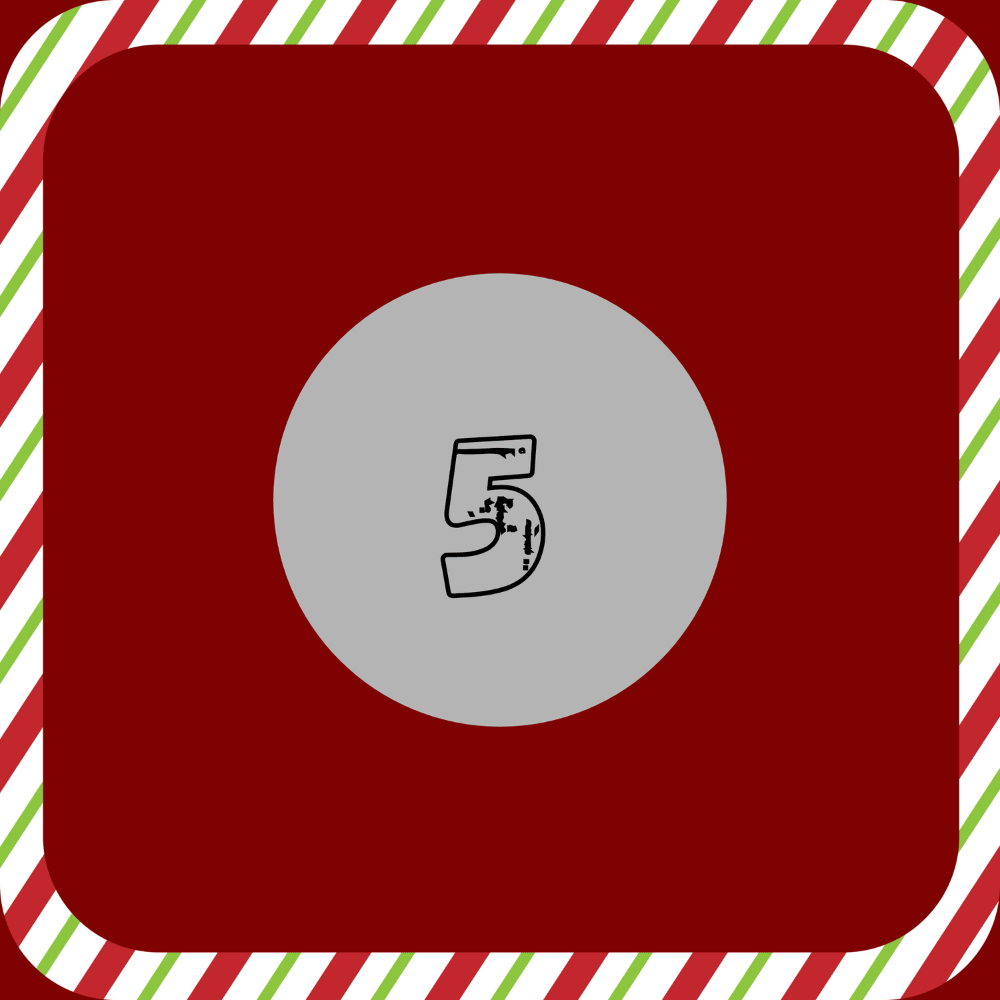

Muutumme filosofisiksi ja pohdimme, mikä on todellista tämän päivän epätodellisessa maailmassa. Siellä, jossakin taiteen ja todellisuuden välissä, löydämme sekä päivän version Oi jouluyö -laulusta että päivän uudissanan. Päivän luukku paljastaa kakofonisen dance-version, joka huokuu kipinäsadetta ja tiukkoja farkkushortseja.
Kommentit / Kommentarer (1)
<p>Ja vad skall man säga om denna version. Jag använder Erik Grönvalls svenska version som referens då jag försöker värdera och då hamnar denna väldigt lågt. </p>